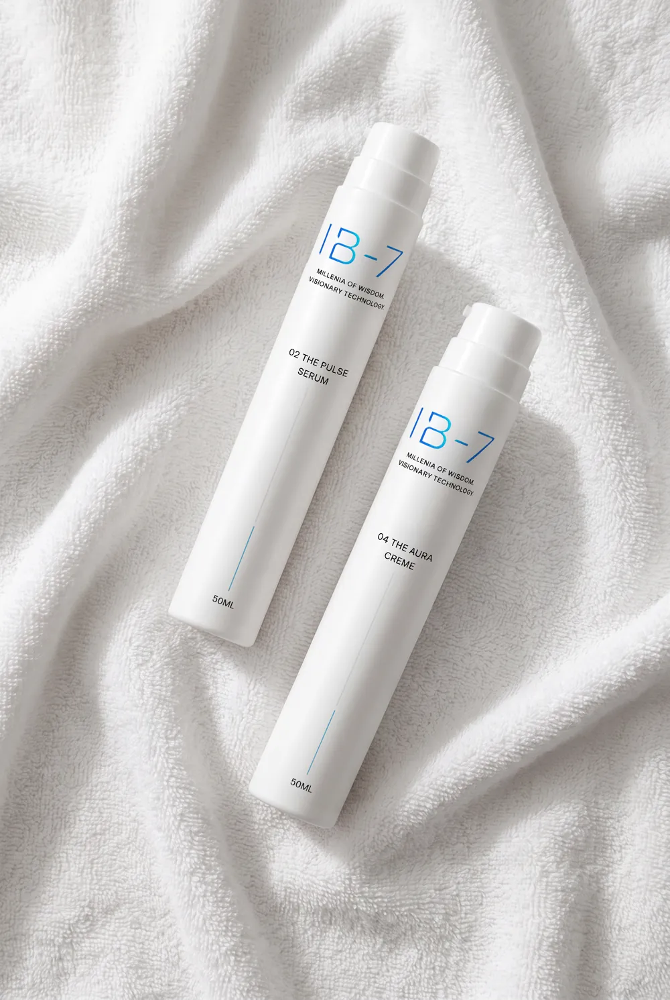
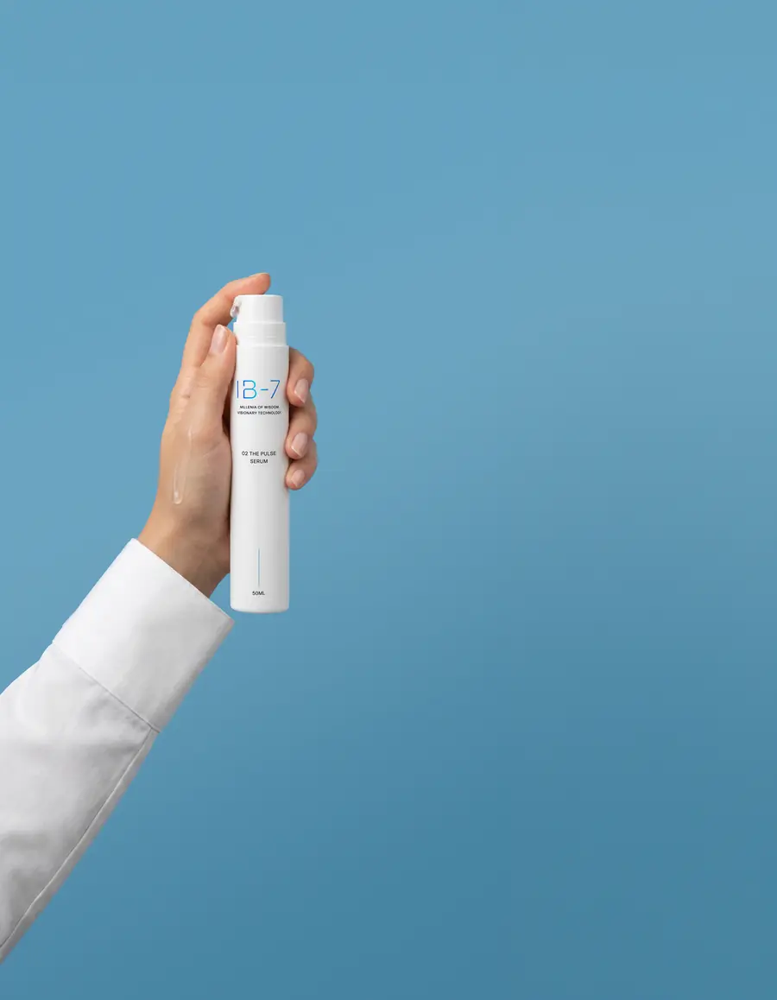
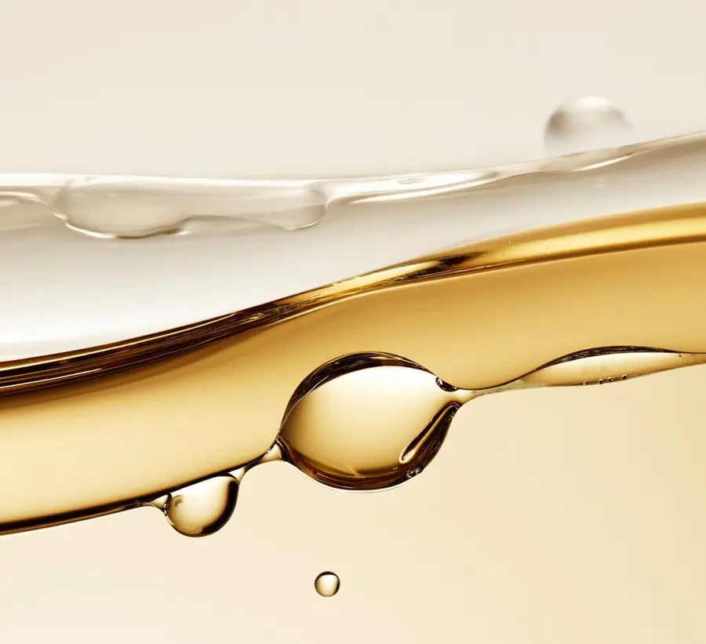
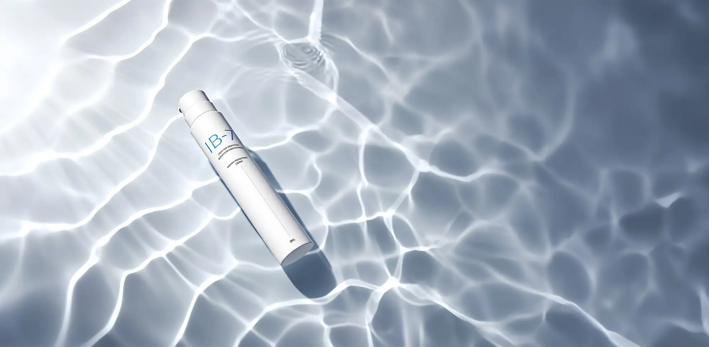
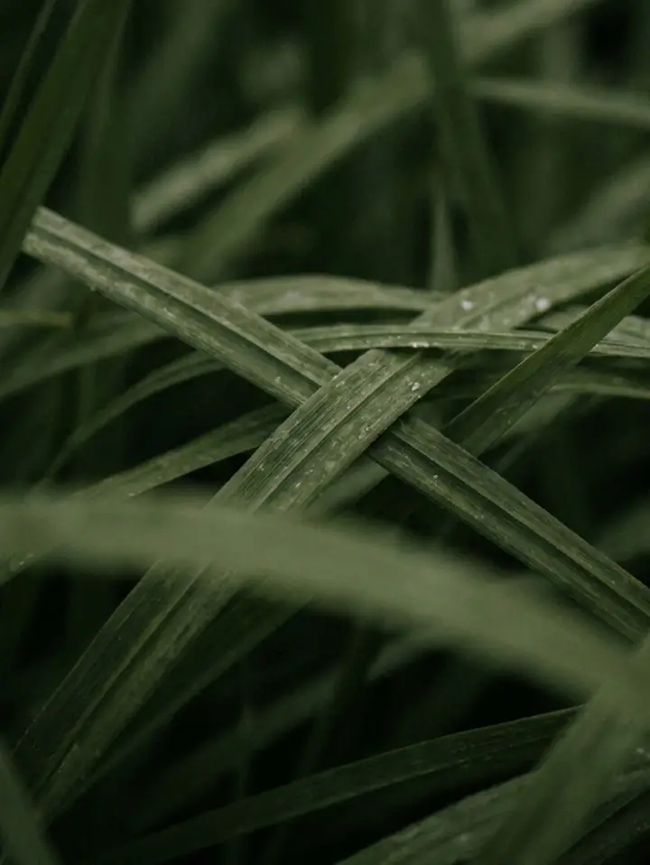

Das Perfect Duo
179,00 €Alle Wirkstoffe, 7 + 7. Die Basis des Rituals.
2 x 50 ml · 1.790,00 € / 1 l · du sparst 49,00 €
Jeder Wirkstoff steht genau einmal im System, außer Niacinamid. Scrolle durch beide Formeln oder tippe einen Namen an.
Zwei Aufgaben, zwei Formeln: im Serum für ein verfeinertes Hautbild, in der Creme für die Barriere.
Aus der chinesischen Medizin überliefert. Der Vitalpilz erdet die Hightech-Formel des Serums.
Ein stabilisiertes Vitamin-C-Derivat, das im hautneutralen pH-Bereich arbeitet.
Feuchtigkeit, einmal im System statt drei Mal im Regal.

Biotechnologie. Schutz vor umweltbedingten Belastungen.

Biotechnologie. Ein Signalpeptid für die Mimikpartien.

Biotechnologie. Ein hergestelltes Signalpeptid.
Niacinamid arbeitet im Serum am Hautbild und in der Creme an der Barriere. Alles andere gibt es genau einmal.
Seit Jahrtausenden geschätzt. Lässt gestresst wirkende Haut beruhigt erscheinen.
Fruchtextrakt aus der chinesischen Medizin.
Nährt und schützt vor Feuchtigkeitsverlust. Die Creme schließt ein, was das Serum gebracht hat.
Pflanzlich, hautidentisch. Nährt, ohne zu beschweren.

Sonora. Pflanzliches Öl für den seidigen Abschluss.

Atlantikküste. Ein Algenextrakt.

In beiden Formeln. Hier die zweite Aufgabe: die Barriere.

Sechs Traditionen und Regionen, dazu Forschung und Biotechnologie. Tippe einen Wirkstoff an, um ihn oben zu sehen.
Zwei Wirkstoffe aus der überlieferten Heilkunde Chinas. Reishi ist im Shen Nong Ben Cao Jing erwähnt.
Centella taucht in der Sushruta Samhita auf, einer Schrift des Ayurveda.
Sheabutter ist dort eine traditionelle Pflege.
Squalan, pflanzlich aus Olive.
Jojoba stammt ursprünglich aus der Sonora-Region.
Laminaria, ein Algenextrakt.
Sechs Wirkstoffe aus moderner Forschung und Biotechnologie.
INCI ist die internationale Bezeichnung auf der Verpackung. Auch Duft und Silikone sagen wir offen.
Niacinamide, Ascorbyl Glucoside, Ectoin, Sodium Hyaluronate, Ganoderma Lucidum Extract, Acetyl Hexapeptide-8, sh-Oligopeptide-1. Duftfrei.
Vollständige Liste: PLATZHALTER aus Metafeld inci
Niacinamide, Butyrospermum Parkii Butter, Squalane, Centella Asiatica Extract, Simmondsia Chinensis Seed Oil, Laminaria Ochroleuca Extract, Schisandra Sphenanthera Fruit Extract. Mit Parfum und Silikonen.
Vollständige Liste: PLATZHALTER aus Metafeld inci
THE PULSE ist duftfrei. THE AURA enthält Parfum und Silikone, sie sorgen für das schnelle Einziehen und den seidigen Abschluss. Wer beides meiden möchte, startet mit THE PULSE.

Alle Wirkstoffe, 7 + 7. Die Basis des Rituals.
2 x 50 ml · 1.790,00 € / 1 l · du sparst 49,00 €


Das Perfect Duo
179,00 € 228,00 €